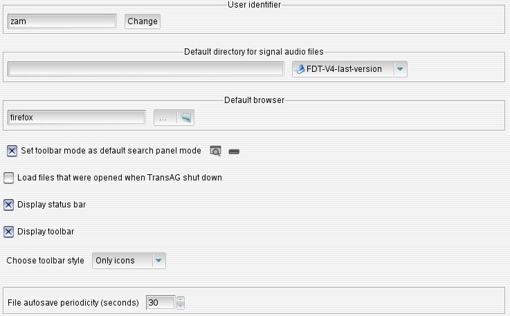
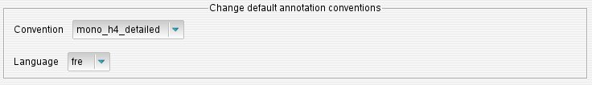
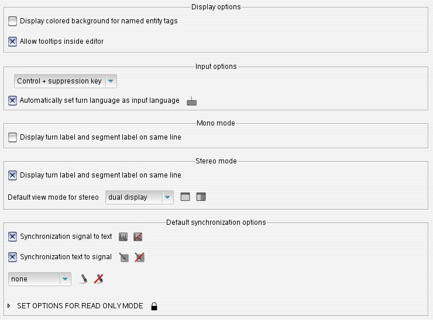
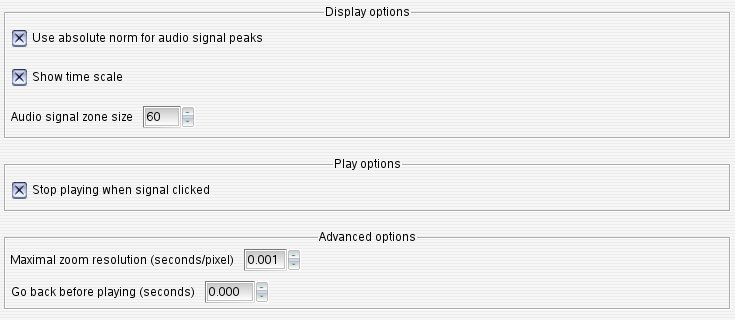
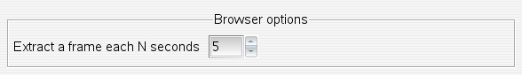
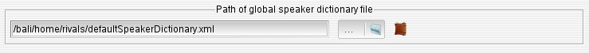
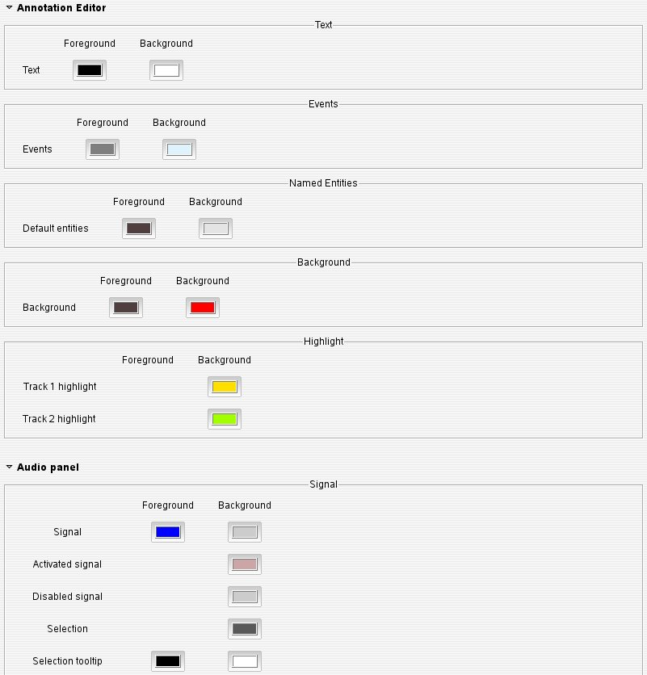
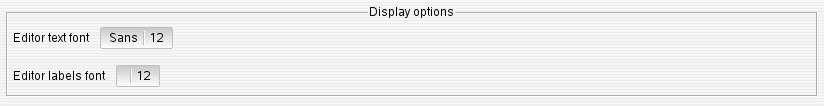

Audio Panel Configuration Audio Panel Configuration
Audio Panel Configuration Audio Panel ConfigurationThe general tab allows to make some basic configuration like defining the user TranscriberAG name, the default html browser, etc.
The browser item defines which tool to use to read this manual. Default browser depends on current OS:
TranscriberAG automatically saves files being edited at a periodicity defined by "File autosave periodicity" item. This allows to recover edits from a rather recent version of the file in case TranscriberAG crashes, and can also allow to revert edits to a previous saved version, using File > Revert file > Revert to autosaved file menu option. Autosaved files are suffixed with a "~" character. They are suppressed when the file is saved by the user.
>> Back to topThis tab permits you to define the default language and convention used when creating a transcription.
 >> Back to topText Editor's tab configures entity's color, suppression shortcuts, synchronization mode, etc.
First combo-box in Input options allows to define how segmentation marks can be deleted. <backspace> and <suppr> allow deletion of text, events and entity marks, but it may be undesirable to delete segmentation marks too easily. Segmentation deletion modality can be set to:
This tab allows to manage the waveform's resolution, the norm used, and some other behaviors.
"Audio signal zone size" allow to define waveform display height, in pixels. This value can be changed in the following ways:
This tab allows to manage the number of frames extracted per seconds for the video frame browser.
 >> Back to topThis panel allows to define the default dictionary speaker.
 >> Back to topThe following picture is the color sub-tab which allows to choose colors for audio and text editor widget:
The following picture is the fonts sub-tab allows to select default font:
 >> Back to top